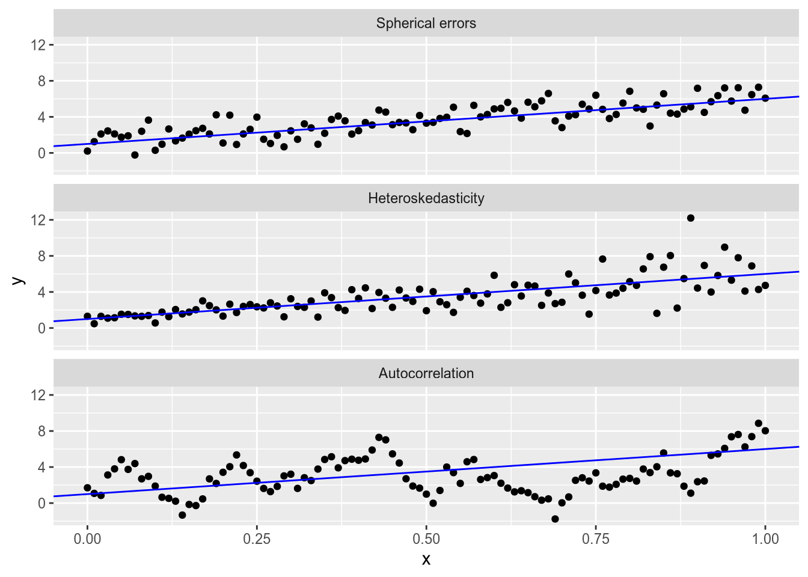
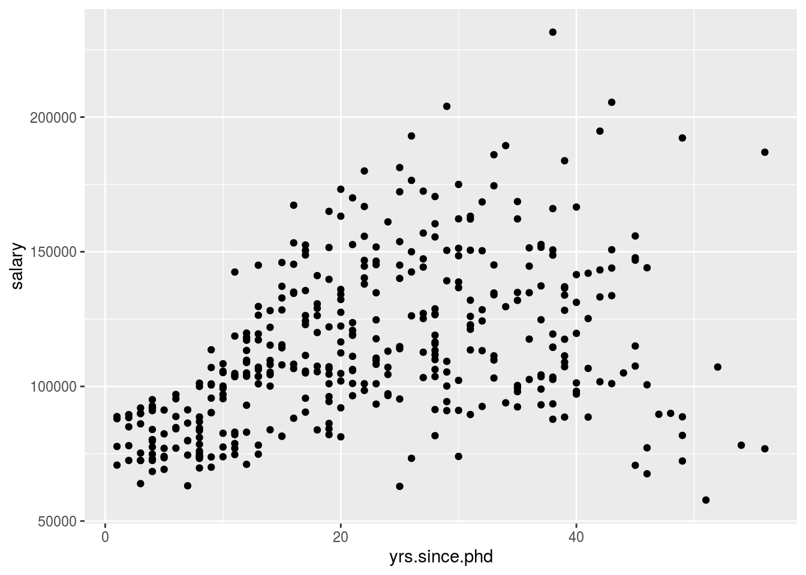

11 Non-Spherical Errors
In our consideration so far of the linear model, \[ \mathbf{Y} = \mathbf{X} \beta + \epsilon, \] we have focused on the ordinary least squares estimator, \[ \hat{\beta}_{\text{OLS}} = (\mathbf{X}^\top \mathbf{X})^{-1} \mathbf{X}^\top \mathbf{Y}. \] We have seen that OLS is an unbiased and consistent estimator of the linear model parameters as long as we have strict exogeneity, \[ E[\epsilon \,|\, \mathbf{X}] = \mathbf{0}. \] However, two more important properties of OLS depend on the assumption of spherical errors, \[ V[\epsilon \,|\, \mathbf{X}] = \sigma^2 \mathbf{I} = \begin{bmatrix} \sigma^2 & 0 & \cdots & 0 \\ 0 & \sigma^2 & \cdots & 0 \\ \vdots & \vdots & \ddots & \vdots \\ 0 & 0 & \cdots & \sigma^2 \end{bmatrix}. \] These properties are
That \(\hat{\beta}_{\text{OLS}}\) is the minimum-variance unbiased linear estimator of \(\beta\); i.e., that OLS is BLUE.
That the variance of OLS is given by the formula \[ V[\hat{\beta}_{\text{OLS}} \,|\, \mathbf{X}] = \sigma^2 (\mathbf{X}^\top \mathbf{X})^{-1}. \]
In other words, if the spherical errors assumption fails to hold, there are two problems with OLS.
There is a better estimator available—one that is still unbiased, but is less sensitive to sampling variation (i.e., has lower standard errors).
The formula we use to estimate the standard errors of OLS is invalid. Our confidence intervals and hypothesis tests will (usually) be overconfident, overstating the precision of our results.
This week, we will talk about two ways to proceed in the face of non-spherical errors. The first is to use an estimator other than OLS, specifically one called generalized least squares, or GLS. GLS solves both of the problems listed above (inefficiency and invalid standard errors), but its own validity depends on stringent assumptions that are tough to confirm.
The second is to use OLS, but to correct the standard errors. Then our estimates will still be inefficient, relative to the hypothetical ideal GLS estimator, but we will at least be able to draw valid inferences (from large samples).
Before we dive into these two methods, let’s remind ourselves what deviations from the spherical errors assumption look like. Spherical errors fails when we have either or both of:
Heteroskedasticity: \(V[\epsilon_i] \neq V[\epsilon_j]\).
Autocorrelation: \(\text{Cov}[\epsilon_i, \epsilon_j] \neq 0\) (for some \(i \neq j\)).
Here’s what each of the three cases looks like in bivariate data.

Autocorrelation usually arises in time series analysis, which is beyond the scope of this course, so we will focus primarily on heteroskedasticity.
11.1 Generalized Least Squares
Suppose strict exogeneity holds, but spherical errors fails, with \[ V[\epsilon \,|\, \mathbf{X}] = \sigma^2 \Omega = \sigma^2 \begin{bmatrix} \omega_{11} & \omega_{12} & \cdots & \omega_{1N} \\ \omega_{12} & \omega_{22} & \cdots & \omega_{2N} \\ \vdots & \vdots & \ddots & \vdots \\ \omega_{1N} & \omega_{2N} & \cdots & \omega_{NN} \end{bmatrix}, \] where \(\Omega\) is known29 and \(\sigma^2\) is unknown. In other words, we know the exact structure of heteroskedasticity and autocorrelation, up to a potentially unknown constant.
We derived the OLS estimator by finding the \(\hat{\beta}\) that minimizes the sum of squared errors, \[ \text{SSE} = \sum_n (Y_n - \mathbf{x}_n \cdot \hat{\beta})^2 = (\mathbf{Y} - \mathbf{X} \hat{\beta})^\top (\mathbf{Y} - \mathbf{X} \hat{\beta}). \] We derive its close cousin, the generalized least squares, or GLS, estimator, by minimizing the weighted sum of squared errors, \[ \text{WSSE} = (\mathbf{Y} - \mathbf{X} \hat{\beta})^\top \Omega^{-1} (\mathbf{Y} - \mathbf{X} \hat{\beta}). \] I’ll spare you the matrix calculus that follows, but suffice to say the resulting estimator is \[ \hat{\beta}_{\text{GLS}} = (\mathbf{X}^\top \Omega^{-1} \mathbf{X})^{-1} \mathbf{X}^\top \Omega^{-1} \mathbf{Y}. \] It is easy to confirm that OLS is the special case of GLS with \(\Omega = \mathbf{I}\). Similar to the formula for OLS, the variance of GLS is \[ V[\hat{\beta}_{\text{GLS}} \,|\, \mathbf{X}] = \sigma^2 (\mathbf{X}^\top \Omega^{-1} \mathbf{X})^{-1}. \]
Like OLS, GLS is unbiased and consistent as long as we have strict exogeneity. Even if we get \(\Omega\) wrong—i.e., we misspecify the model of the error variance—GLS will still “work” in the sense of giving us an unbiased and consistent estimate of the coefficients. This is easy to confirm. \[ \begin{aligned} E [ \hat{\beta}_{\text{GLS}} \,|\, \mathbf{X} ] &= E [ (\mathbf{X}^\top \Omega^{-1} \mathbf{X})^{-1} \mathbf{X}^\top \Omega^{-1} \mathbf{Y} \,|\, \mathbf{X} ] \\ &= (\mathbf{X}^\top \Omega^{-1} \mathbf{X})^{-1} \mathbf{X}^\top \Omega^{-1} E [\mathbf{Y} \,|\, \mathbf{X} ] \\ &= (\mathbf{X}^\top \Omega^{-1} \mathbf{X})^{-1} \mathbf{X}^\top \Omega^{-1} (\mathbf{X} \beta) \\ &= (\mathbf{X}^\top \Omega^{-1} \mathbf{X})^{-1} (\mathbf{X}^\top \Omega^{-1} \mathbf{X}) \beta \\ &= \beta. \end{aligned} \] If we get \(\Omega\) right, then GLS has two important additional properties.
Our estimate of the variance matrix, \[ \hat{\Sigma} = \frac{\text{WSSE}}{N - K} (\mathbf{X}^\top \Omega^{-1} \mathbf{X})^{-1}, \] is valid for inference using the same methods we discussed in the OLS case.
GLS is BLUE, per the Gauss-Markov theorem: there is no other unbiased linear estimator with lower standard errors.
The first of these is pretty important; the second is just icing on the cake. The main problem with non-spherical errors is the threat they pose to inference from OLS. GLS fixes that—as long as we know \(\Omega\). More on this soon.
An important special case of GLS is when there is heteroskedasticity but no autocorrelation, so that \[ \Omega = \sigma^2 \begin{bmatrix} \omega_{11} & 0 & \cdots & 0 \\ 0 & \omega_{22} & \cdots & 0 \\ \vdots & \vdots & \ddots & \vdots \\ 0 & 0 & \cdots & \omega_{NN} \end{bmatrix}. \] This special case is called weighted least squares, since GLS gives us the same answer as if we ran OLS on the following “weighted” data: \[ \mathbf{X}^* = \begin{bmatrix} x_{11} / \sqrt{\omega_{11}} & x_{12} / \sqrt{\omega_{11}} & \cdots & x_{1K} / \sqrt{\omega_{11}} \\ x_{21} / \sqrt{\omega_{22}} & x_{22} / \sqrt{\omega_{22}} & \cdots & x_{2K} / \sqrt{\omega_{22}} \\ \vdots & \vdots & \ddots & \vdots \\ x_{N1} / \sqrt{\omega_{NN}} & x_{N2} / \sqrt{\omega_{NN}} & \cdots & x_{NK} / \sqrt{\omega_{NN}} \end{bmatrix}, \mathbf{Y}^* = \begin{bmatrix} Y_1 / \sqrt{\omega_{11}} \\ Y_2 / \sqrt{\omega_{22}} \\ \vdots \\ Y_N / \sqrt{\omega_{NN}} \end{bmatrix}. \]
11.2 Detecting Heteroskedasticity
If you don’t have prior knowledge of the variance structure of the error term, you may be interested in testing whether the homoskedasticity assumption of OLS is viable. In a bivariate regression model, you can usually detect heteroskedasticity via the eye test. Not so much when you have multiple covariates. In this case, you may want to formally test for heteroskedasticity.
There are a few such tests, but we will just talk about the Breusch-Pagan test, which was developed by Breusch and Pagan (1980) and refined by Koenker and Bassett Jr (1982). The null hypothesis of the test is that \(V[\epsilon_i \,|\, \mathbf{X}] = \sigma^2\) for all \(i = 1, \ldots, N\). The test procedure is as follows.
- Calculate the OLS estimate, \(\hat{\beta}_{\text{OLS}}\).
- Calculate the OLS residuals, \(\hat{e} = Y - \mathbf{X} \hat{\beta}_{\text{OLS}}\). Let \(\hat{u}\) be the vector of squared residuals, \(\hat{u} = (\hat{e}_1^2, \ldots, \hat{e}_N^2)\).
- Run a regression of \(\hat{u}\) on \(\mathbf{Z}\), an \(N \times q\) matrix of covariates. Let \(R_{\hat{u}}^2\) denote the \(R^2\) of this regression.
- Reject the null hypothesis if \(N R_{\hat{u}}^2\) exceeds the critical value for a \(\chi_{q - 1}^2\) distribution.
In the canonical version of this test, \(\mathbf{Z}\) is equal to \(\mathbf{X}\). A more powerful version is the White test (White 1980), in which \(\mathbf{Z}\) contains each variable in \(\mathbf{X}\) as well as all second-order terms (squares and interactions).
11.3 Heteroskedasticity of Unknown Form
Suppose we know there is heteroskedasticity but we don’t trust ourselves to properly specify the error variances to run weighted least squares.30 Then we do not have an efficient estimator of \(\beta\). We might be all right with that, but we would really like to have a good estimator for the standard errors of the OLS estimator, so that we can test hypotheses about the coefficients. Happily, we can estimate the variance matrix of the OLS estimator consistently even in the presence of heteroskedasticity.
White’s heteroskedasticity-consistent estimator (White 1980) of the variance matrix starts by forming a diagonal matrix out of the squared residuals, \[ \hat{\mathbf{U}} = \begin{bmatrix} \hat{u}_1 & 0 & \cdots & 0 \\ 0 & \hat{u}_2 & \cdots & 0 \\ \vdots & \vdots & \ddots & \vdots \\ 0 & 0 & \cdots & \hat{u}_N \end{bmatrix} = \begin{bmatrix} \hat{e}_1^2 & 0 & \cdots & 0 \\ 0 & \hat{e}_2^2 & \cdots & 0 \\ \vdots & \vdots & \ddots & \vdots \\ 0 & 0 & \cdots & \hat{e}_N^2 \end{bmatrix} \] This lets us form the “meat” of the “sandwich” that is White’s estimator of the OLS variance matrix: \[ \hat{\Sigma}_{\text{HC}} = (\mathbf{X}^\top \mathbf{X})^{-1} \mathbf{X}^\top \hat{\mathbf{U}} \mathbf{X} (\mathbf{X}^\top \mathbf{X})^{-1}. \] You know I love proofs, but I am not even going to attempt to prove that this consistently estimates the (asymptotic) variance matrix of \(\hat{\beta}_{\text{OLS}}\). See Greene (2003, 198–99) for a sketch of the proof.
White’s estimator is consistent but not unbiased, so we may want to apply a sort of bias correction in small samples. A popular choice is the so-called “HC1” estimator, which corrects for the number of parameters estimated the same way the usual OLS variance estimator does: \[ \hat{\Sigma}_{\text{HC1}} = \frac{N}{N - K} \hat{\Sigma}_{\text{HC}} \] In this scheme, the standard White estimator is called the “HC” or “HC0” estimator. There are many other consistent estimators that apply some or other finite-sample correction; see MacKinnon and White (1985) for the gory details.
Because of its association with the , robust option in Stata, people sometimes call the White estimator of the standard errors “robust standard errors”. Don’t do that. In your own work, if you estimate and report heteroskedasticity-consistent standard errors, report that you use the White (1980) estimator of the standard errors, and specify which variant (HC0, HC1, and so on). Remember that your goal is to give others enough information to replicate your analysis even if they don’t have your code—“robust standard errors” has too many interpretations to accomplish that.
Finally, it is important to know that weighted least squares and heteroskedasticity-consistent standard errors are not mutually exclusive approaches. If you have a suspicion about the error variances that you think can improve the precision of the regression, but you are not totally comfortable with committing to WLS for inference, you can calculate heteroskedasticity-consistent standard errors for a WLS (or GLS) fit.
11.4 Appendix: Implementation in R
We’ll be using the following packages:
We will use data from the car package on professors’ salaries. This is a topic that, ideally, will be of great concern to you in 5ish years.
## rank discipline yrs.since.phd yrs.service sex salary
## 1 Prof B 19 18 Male 139750
## 2 Prof B 20 16 Male 173200
## 3 AsstProf B 4 3 Male 79750
## 4 Prof B 45 39 Male 115000
## 5 Prof B 40 41 Male 141500
## 6 AssocProf B 6 6 Male 9700011.4.1 Generalized Least Squares
Let us model a professor’s salary as a function of the number of years since she received her PhD. If we glance at the data, we see obvious heteroskedasticity.

There is much more variation in the salaries of professors 30+ years into their careers than in those who are fresh out of grad school. If we want the most precise model of the relationship between years since PhD and salary, we might want to place more weight on early-career professors and less on late-career professors.
Remember that weighted least squares is the special case of GLS where the off-diagonal elements of \(\Omega\) are zero (i.e., there is heteroskedasticity but no autocorrelation):
\[
\Omega = \sigma^2 \begin{bmatrix}
\omega_{11} & 0 & \cdots & 0 \\
0 & \omega_{22} & \cdots & 0 \\
\vdots & \vdots & \ddots & \vdots \\
0 & 0 & \cdots & \omega_{NN}
\end{bmatrix}.
\]
To run weighted least squares in R, we just use the weights argument to the lm() function. As an example, let’s set
\[
\omega_{nn} = \frac{1}{\text{Years Since PhD}_n}
\]
for each observation \(n\), to place the greatest weight on early-career observations. We will first run a baseline OLS model, then compare to the weighted model.
##
## Call:
## lm(formula = salary ~ yrs.since.phd + yrs.service, data = Salaries)
##
## Residuals:
## Min 1Q Median 3Q Max
## -79735 -19823 -2617 15149 106149
##
## Coefficients:
## Estimate Std. Error t value Pr(>|t|)
## (Intercept) 89912.2 2843.6 31.620 < 2e-16 ***
## yrs.since.phd 1562.9 256.8 6.086 2.75e-09 ***
## yrs.service -629.1 254.5 -2.472 0.0138 *
## ---
## Signif. codes: 0 '***' 0.001 '**' 0.01 '*' 0.05 '.' 0.1 ' ' 1
##
## Residual standard error: 27360 on 394 degrees of freedom
## Multiple R-squared: 0.1883, Adjusted R-squared: 0.1842
## F-statistic: 45.71 on 2 and 394 DF, p-value: < 2.2e-16wls_salaries <- lm(salary ~ yrs.since.phd + yrs.service,
weights = 1 / yrs.since.phd,
data = Salaries)
summary(wls_salaries)##
## Call:
## lm(formula = salary ~ yrs.since.phd + yrs.service, data = Salaries,
## weights = 1/yrs.since.phd)
##
## Weighted Residuals:
## Min 1Q Median 3Q Max
## -13520.2 -4386.2 -91.3 4101.0 16045.7
##
## Coefficients:
## Estimate Std. Error t value Pr(>|t|)
## (Intercept) 79671.5 1460.3 54.560 < 2e-16 ***
## yrs.since.phd 1753.3 242.0 7.246 2.27e-12 ***
## yrs.service -288.9 264.6 -1.092 0.276
## ---
## Signif. codes: 0 '***' 0.001 '**' 0.01 '*' 0.05 '.' 0.1 ' ' 1
##
## Residual standard error: 5759 on 394 degrees of freedom
## Multiple R-squared: 0.4274, Adjusted R-squared: 0.4245
## F-statistic: 147.1 on 2 and 394 DF, p-value: < 2.2e-16Compared to OLS, our WLS model yields a stronger relationship between years since the PhD and the expected value of a professor’s salary. In addition, we estimate a smaller coefficient on years of service, and would no longer reject the null hypothesis of no relationship there.
Which model is better, OLS or WLS? It depends on whether our weights correspond to the true relative variance in the error term. In this case, we’ve specified a pretty aggressive weighting scheme—a professor with 1 year of service gets double the weight of a professor with 2 years of service. An alternative weighting scheme would give us different results. The “best” model is the one that best corresponds to the true \(\Omega\), which unfortunately is hard to know in advance. The best we can do is apply theory and judgment in a thoughtful way.
In the (relatively unlikely) event that you are pre-specifying \(\Omega\) with autocorrelations, you can use the lm.gls() function from the MASS package. The gls() function from the nlme package performs feasible generalized least squares, whereby we write \(\Omega\) as a function of a few parameters, estimate those parameters, and run the subsequent GLS model.
11.4.2 Breusch-Pagan Test
We already used the “eye test” to confirm the presence of heteroskedasticity in the relationship we are modeling, but let’s see how we would use the Breusch-Pagan test to confirm our suspicion. For this we use the bptest() function from the lmtest package.
##
## studentized Breusch-Pagan test
##
## data: ols_salaries
## BP = 49.864, df = 2, p-value = 1.486e-11By default, bptest() uses the same variables as in the original regression in the regression of the squared residuals. To perform the White test, we can use an extra argument to bptest() to specify a different model formula.
bptest(ols_salaries,
~ yrs.since.phd * yrs.service + I(yrs.since.phd^2) + I(yrs.service^2),
data = Salaries)##
## studentized Breusch-Pagan test
##
## data: ols_salaries
## BP = 60.486, df = 5, p-value = 9.644e-12In this case, regardless of which test we use, we reject the null hypothesis of homoskedasticity.
11.4.3 Heteroskedasticity-Consistent Standard Errors
To calculate the White estimator and its friends in R, we use the vcovHC() function from the sandwich package.
## (Intercept) yrs.since.phd yrs.service
## (Intercept) 5809136.7 -340724.37 111807.54
## yrs.since.phd -340724.4 77168.04 -75508.41
## yrs.service 111807.5 -75508.41 91090.58To use HC1 (or another one of the finite-sample corrections to the ordinary White estimate), change the type argument to, e.g., type = "HC1". See ?vcovHC for all the options.
To create a “regression table” using our new “robust” standard errors, we can use the coeftest() function from the lmtest package.
##
## t test of coefficients:
##
## Estimate Std. Error t value Pr(>|t|)
## (Intercept) 89912.18 2843.56 31.6196 < 2.2e-16 ***
## yrs.since.phd 1562.89 256.82 6.0856 2.754e-09 ***
## yrs.service -629.10 254.47 -2.4722 0.01385 *
## ---
## Signif. codes: 0 '***' 0.001 '**' 0.01 '*' 0.05 '.' 0.1 ' ' 1##
## t test of coefficients:
##
## Estimate Std. Error t value Pr(>|t|)
## (Intercept) 89912.18 2410.22 37.3046 < 2.2e-16 ***
## yrs.since.phd 1562.89 277.79 5.6261 3.501e-08 ***
## yrs.service -629.10 301.81 -2.0844 0.03777 *
## ---
## Signif. codes: 0 '***' 0.001 '**' 0.01 '*' 0.05 '.' 0.1 ' ' 1Just like ordinary regression tables, the ones made by coeftest() can be “swept” into data frames using the tools in broom:
## # A tibble: 3 x 5
## term estimate std.error statistic p.value
## <chr> <dbl> <dbl> <dbl> <dbl>
## 1 (Intercept) 89912. 2410. 37.3 2.33e-131
## 2 yrs.since.phd 1563. 278. 5.63 3.50e- 8
## 3 yrs.service -629. 302. -2.08 3.78e- 2You may also want to use the White-estimated standard errors to conduct Wald tests of linear hypotheses. You can do that by supplying the relevant estimated variance matrix to the vcov argument of linearHypothesis():
linearHypothesis(ols_salaries,
c("yrs.since.phd = 1500", "yrs.service = -500"),
vcov = vcv0,
test = "Chisq")## Linear hypothesis test
##
## Hypothesis:
## yrs.since.phd = 1500
## yrs.service = - 500
##
## Model 1: restricted model
## Model 2: salary ~ yrs.since.phd + yrs.service
##
## Note: Coefficient covariance matrix supplied.
##
## Res.Df Df Chisq Pr(>Chisq)
## 1 396
## 2 394 2 0.3166 0.8536Finally, remember how earlier we talked about how the WLS estimates are only as good as the weights you choose. If they’re not the true weights, then WLS is not efficient and the standard error estimator is inconsistent. We can’t fix the first problem, but we can fix the second. To wit, you can estimate heteroskedasticity-consistent standard errors for WLS models too.
##
## t test of coefficients:
##
## Estimate Std. Error t value Pr(>|t|)
## (Intercept) 79671.54 1460.26 54.5599 < 2.2e-16 ***
## yrs.since.phd 1753.29 241.95 7.2465 2.273e-12 ***
## yrs.service -288.93 264.64 -1.0918 0.2756
## ---
## Signif. codes: 0 '***' 0.001 '**' 0.01 '*' 0.05 '.' 0.1 ' ' 1##
## t test of coefficients:
##
## Estimate Std. Error t value Pr(>|t|)
## (Intercept) 79671.54 1473.72 54.0616 < 2.2e-16 ***
## yrs.since.phd 1753.29 244.71 7.1647 3.862e-12 ***
## yrs.service -288.93 271.59 -1.0639 0.288
## ---
## Signif. codes: 0 '***' 0.001 '**' 0.01 '*' 0.05 '.' 0.1 ' ' 1So if you have a good idea about the residual variances but aren’t sure you’ve nailed it down, you can have the best of both worlds—at least in terms of large-sample hypothesis testing.
References
Breusch, Trevor Stanley, and Adrian Rodney Pagan. 1980. “The Lagrange Multiplier Test and Its Applications to Model Specification in Econometrics.” The Review of Economic Studies 47 (1): 239–53.
Greene, William H. 2003. Econometric Analysis. 5th ed. Prentice Hall.
Koenker, Roger, and Gilbert Bassett Jr. 1982. “Robust Tests for Heteroscedasticity Based on Regression Quantiles.” Econometrica: Journal of the Econometric Society, 43–61.
MacKinnon, James G, and Halbert White. 1985. “Some Heteroskedasticity-Consistent Covariance Matrix Estimators with Improved Finite Sample Properties.” Journal of Econometrics 29 (3): 305–25.
White, Halbert. 1980. “A Heteroskedasticity-Consistent Covariance Matrix Estimator and a Direct Test for Heteroskedasticity.” Econometrica: Journal of the Econometric Society, 817–38.
Like any variance matrix, \(\Omega\) must be symmetric and positive definite. An \(N \times N\) matrix \(\mathbf{A}\) is positive definite if, for any \(N \times 1\) vector \(\mathbf{c} \neq \mathbf{0}\), the scalar \(\mathbf{c}^\top \mathbf{A} \mathbf{c} > 0\). Positive definiteness implies, among other things, that every diagonal entry of \(\Omega\) is positive and that \(\Omega\) is invertible.↩︎
There is an in-between solution known as feasible generalized least squares, whereby we estimate \(\Omega\) from the data. This requires placing some structure on \(\Omega\), and the resulting estimator will be consistent but not unbiased.↩︎